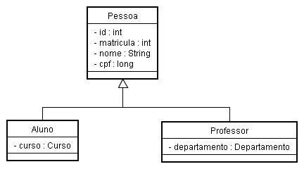
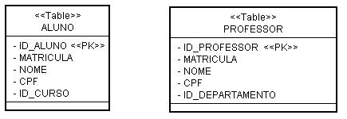
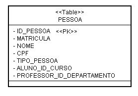
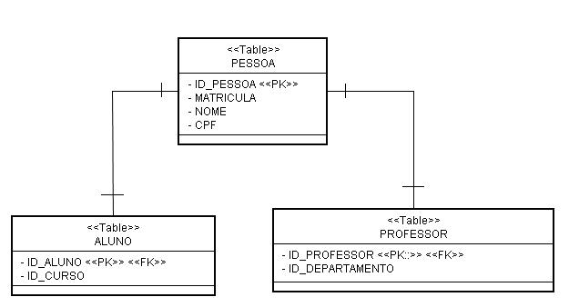

Informações
| Tipo: | Tutorial |
|---|---|
| Data de Publicação: | 31/12/2005 |
| Revisado em: | 31/12/2005 |
Vote!
Tags Relacionadas
Comentários ( 5 )
Imprimir
Mapeando Herança com Hibernate
por:
Raphaela Galhardo Fernandes (raphaela@jeebrasil.com.br)
Gleydson Lima (gleydson@jeebrasil.com.br)
Neste tutorial serão abordados os mapeamentos de herança com Hibernate para as três tipos de estratégias: tabela por classe concreta, tabela por hierarquia e tabela por sub-classe.
Introdução
O Hibernate fornece vários mecanismos de se realizar o mapeamento de uma relação de herança:
- Tabela por classe concreta: cada classe concreta é mapeada para uma tabela diferente no banco de dados;
- Tabela por Hierarquia: todas as classes são mapeadas em uma única tabela;
- Tabela por Sub-Classe: mapeia cada tabela, inclusive a classe pai, para tabelas diferentes.
Neste tutorial serão abordados os mapeamentos de herança para as três estratégias descritas acima.
Mapeamento de Herança
Observe o exemplo de herança apresentado na Figura 1. Neste caso, as classes Aluno e Professor herdam da classe Pessoa, ou seja, são seus filhos.

Figura 1 - Exemplo de Herança
As Figuras 2, 3 e 4 mostram as tabelas que devem ser criadas para as estratégias de mapeamento tabela por classe concreta, tabela por hierarquia e tabela por subclasse, respectivamente.

Figura 2 - Tabela por Classe Concreta

Figura 3 - Tabela por Hierarquia

Figura 4 - Tabela por Sub-Classe
Em relação à estratégia tabela por classe concreta, o mapeamento deve ser feito aplicando os conhecimentos já estudados em tutoriais anteriores, pois existem duas tabelas independentes. O principal problema dessa estratégia é que não suporta muito bem associações polimórficas. Em banco de dados, as associações são feitas através de relacionamentos de chave estrangeira. Neste caso, as subclasses são mapeadas em tabelas diferentes, portanto uma associação polimórfica para a classe mãe não seria possível através de chave estrangeira. Outro problema conceitual é que várias colunas diferentes de tabelas distintas compartilham da mesma semântica, podendo tornar a evolução do esquema mais complexo, por exemplo, a mudança de um tipo de uma coluna da classe mãe implica em mudanças nas várias tabelas mapeadas.
Em relação à tabela por hierarquia, o mapeamento deve ser feito como mostrado na Listagem 1. O mapeamento da classe Pessoa é feito para a tabela PESSOA. Para haver a distinção entre as três classes (Pessoa, Aluno e Professor) surge uma coluna especial (discriminator). Essa coluna não é uma propriedade da classe persistente, mas apenas usada internamente pelo Hibernate. No caso, a coluna discriminator é a TIPO_PESSOA e neste exemplo pode assumir os valores 1 e 2. Esses valores são atribuídos automaticamente pelo Hibernate.
Cada subclasse possui uma tag <subclass>, onde suas propriedades devem ser mapeadas.
...
<hibernate-mapping>
<class name="br.com.j2eebrasil.dominio.Pessoa" table="PESSOA"
discriminator-value="0">
<id name="id" column="ID_PESSOA" type="int">
<generator class="sequence">
<param name="sequence">pessoa_seq</param>
</generator>
</id>
<!-- Coluna Discriminante -->
<discriminator column="TIPO_PESSOA" type="int"/>
<!-- Propriedades comuns -->
<property name="matricula"/>
<property name="nome"/>
<property name="cpf"/>
<!-- Subclasse Aluno -->
<subclass name="br.com.j2eebrasil.dominio.Aluno"
discriminator-value="1">
<many-to-one name="curso" column="ID_CURSO"
class="br.com.j2eebrasil.dominio.Curso"/>
</subclass>
<!-- Subclasse Professor -->
<subclass name="br.com.j2eebrasil.dominio.Professor"
discriminator-value="2">
<many-to-one name="departamento" column="ID_DEPARTAMENTO"
class="br.com.j2eebrasil.dominio.Departamento"/>
</subclass>
</class>
</hibernate-mapping>
Listagem 1 - Mapeamento Herança: Tabela por Hierarquia
A estratégia tabela por hierarquia é bastante simples e apresenta o melhor desempenho na representação do polimorfismo. É importante saber que restrições não nulas não são permitidas para o mapeamento de propriedades das subclasses, pois esse mesmo atributo para uma outra subclasse será nulo.
A terceira estratégia, como já citada, consiste em mapear cada classe em uma tabela diferente. Para o exemplo citado, essa estratégia de mapeamento pode ser vista na Listagem 2. Nessa estratégia as tabelas filhas contêm apenas colunas que não são herdadas e suas chaves primárias são também chaves estrangeiras para a tabela mãe.
...
<hibernate-mapping>
<class name="br.com.j2eebrasil.dominio.Pessoa" table="PESSOA">
<id name="id" column="ID_PESSOA" type="int">
<generator class="increment"/>
</id>
<!-- Propriedades comuns -->
<property name="matricula"/>
<property name="nome"/>
<property name="cpf"/>
<!--Sub-Classe Aluno -->
<joined-subclass name="br.com.j2eebrasil.dominio.Aluno"
table="ALUNO">
<key column="ID_ALUNO"/>
<many-to-one name="curso" column="ID_CURSO"
class="br.com.j2eebrasil.dominio.Curso"/>
</joined-subclass>
<!--Sub-Classe Professor -->
<joined-subclass name="br.com.j2eebrasil.dominio.Professor"
table="PROFESSOR">
<key column="ID_PROFESSOR"/>
<many-to-one name="departamento" column="ID_DEPARTAMENTO"
class="br.com.j2eebrasil.dominio.Departamento"/>
</joined-subclass>
</class>
</hibernate-mapping>
Listagem 2 - Mapeamento Herança: Tabela por Sub-Classe
Neste caso, por exemplo, se um objeto da classe Aluno é persistido, os valores das propriedades da classe mãe são persistidos em uma linha da tabela PESSOA e apenas os valores correspondentes à classe Aluno são persistidos em uma linha da tabela ALUNO. Em momentos posteriores essa instância de aluno persistida pode ser recuperada de um join entre a tabela filha e a tabela mãe. Uma grande vantagem dessa estratégia é que o modelo de relacionamento é totalmente normalizado.
Observe que no mapeamento, o Hibernate utiliza a tag <joined-class> para realizar o mapeamento por subclasse. A tag key declara as chaves primárias das subclasses que são também chaves estrangeiras para a chave primária da classe mãe.
Conclusões
Neste tutorial foi apresentado o mapeamento de herança com Hibernate utilizando três estratégias distintas. A escolha da estratégia vai depender dos requisitos exigidos pela aplicação. O próximo apresenta conceitos relacionados a transações e como ela é implementada com Hibernate.
Referências
- Christian Bauer e Gavin King. Hibernate in Action. 2005.
- Grupo Hibernate. Hibernate Reference Documentation. Version 3.0.5. Obtido em http://www.hibernate.org
- Gleydson de Azevedo Ferreira Lima. Material Didático. 2005.
- Nick Heudecker. Introdução ao Hibernate.
- Maurício Linhares. Introdução ao Hibernate 3.
- Francesc Rosés Albiol. Introducción a Hibernate. 2003.
- Fabiano Kraemer, Jerônimo Jardel Vogt. Hibernate, um Robusto Framework de Persistência Objeto-Relacional. 2005.
Comentários (5)
- Na verdade tenho uma dúvida. Estou programando um sistema utilziando hibernate, onde utilizo herança. Porém, tenho uma outra classe que deverá conter um elemento do pai e um do filho, ou seja, um relacionamento n-1 com cada um deles. Gostaria de saber como ficaria o XML nesse caso. Grato.
- postado por Diego Velasco em 09/11/2006 às 23:21
- Esta estrategia que voce esta usando me parece um tanto estranho. Se o filho herda tudo do pai, por que entao voce precisa referenciar o pai e o filho? Atente tambem para o fato de que voce deve evitar referencias circulares.
- postado por Yuri em 21/11/2006 às 23:21
- Quero saber como implementar o Mapeamento Herança: Tabela por Sub-Classe utlizando annotations. Obrigado.
- postado por Jefferson em 22/12/2006 às 23:21
- O que tenho a dizer que vcs sâo mto bom por de mais,mto sucesso e alegria nessa caminhada um forte abraço e um grande bjx.
- postado por Elza Teodoro em 27/06/2009 às 23:21
- Supondo que em determinado momento o aluno passe a ser professor (deixando de ser aluno). Que impacto esta transformação causaria?
- postado por José Carlos Thompson em 29/06/2009 às 23:21